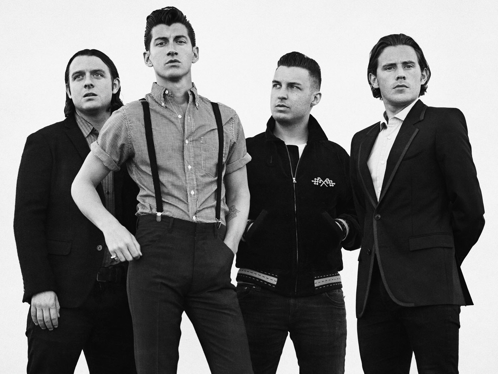

Arctic Monkeys are an English rock band formed in 2002 in High Green, a suburb of Sheffield. The band consists of Alex Turner (lead vocals, rhythm guitar, lead guitar), Matt Helders (drums, backing vocals), Jamie Cook (lead guitar, rhythm guitar) and Nick O'Malley (bass, backing vocals). Former band member Andy Nicholson (bass guitar, backing vocals) left the band in 2006 shortly after their debut album was released.